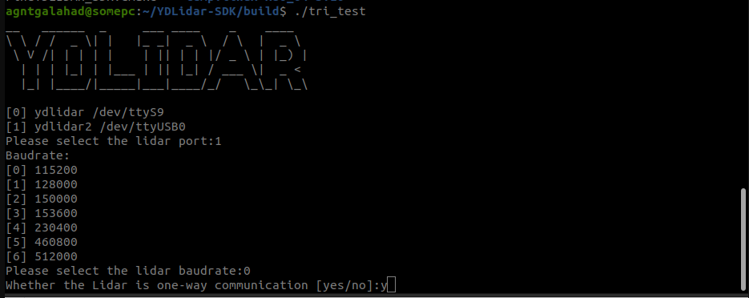
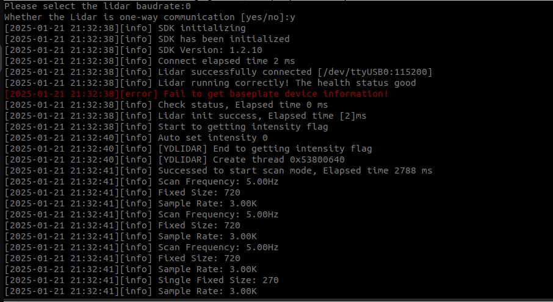
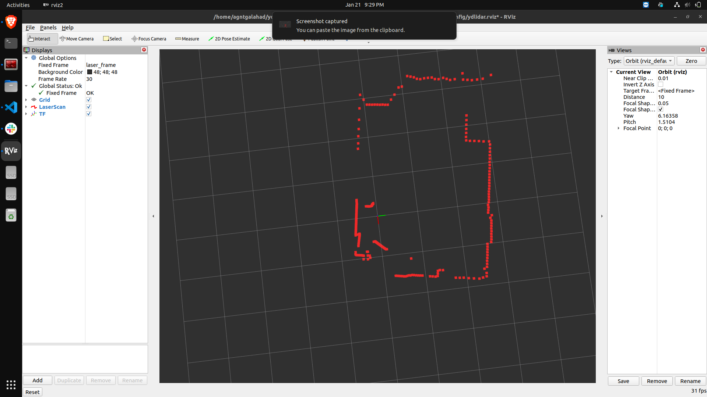

YD LiDAR Setup for ROS2 Humble
The resources present on the internet for setting up the YDLidar SDK and integrating with ROS has been quite vague. So I am documenting the steps here for future reference.
Here is my setup for reference:
Ubuntu 22.04
ROS2 Humble
LiDAR Used: YDLidar X2
YD LiDAR SDK Setup
First of all we need to install the YDLidar SDK from their official github repo. The link for the same can be found here: YDLidar-SDK
Following the steps for build and install
sudo apt install cmake pkg-config
In the YDLidar SDK directory, run the following commands to compile the project. If theres no build directory then make one for installation.
git clone https://github.com/YDLIDAR/YDLidar-SDK.git
cd YDLidar-SDK/build
cmake ..
make
sudo make install
Now the Python API installation was not successful in my case due to some installation issues. But here are the steps in case it gets fixed in the future.
cd YDLidar-SDK
pip install .
# Another method
python setup.py build
python setup.py install
Test the installation with the help of the tests that have been setup in your build directory
cd YDLidar-SDK/build
./tri_test
You should see the cli for the YDLidar test, it should look something like this:


Depending on the LiDAR select your Baud Rate from the table below
| LiDAR | Model | Baudrate | SampleRate(K) | Range(m) | Frequency(HZ) | Intenstiy(bit) | SingleChannel | voltage(V) |
|---|---|---|---|---|---|---|---|---|
| F4 | 1 | 115200 | 4 | 0.12~12 | 5~12 | false | false | 4.8~5.2 |
| S4 | 4 | 115200 | 4 | 0.10~8.0 | 5~12 (PWM) | false | false | 4.8~5.2 |
| S4B | 4/11 | 153600 | 4 | 0.10~8.0 | 5~12(PWM) | true(8) | false | 4.8~5.2 |
| S2 | 4/12 | 115200 | 3 | 0.10~8.0 | 4~8(PWM) | false | true | 4.8~5.2 |
| G4 | 5 | 230400 | 9/8/4 | 0.28/0.26/0.1~16 | 5~12 | false | false | 4.8~5.2 |
| X4 | 6 | 128000 | 5 | 0.12~10 | 5~12(PWM) | false | false | 4.8~5.2 |
| X2/X2L | 6 | 115200 | 3 | 0.10~8.0 | 4~8(PWM) | false | true | 4.8~5.2 |
| G4PRO | 7 | 230400 | 9/8/4 | 0.28/0.26/0.1~16 | 5~12 | false | false | 4.8~5.2 |
| F4PRO | 8 | 230400 | 4/6 | 0.12~12 | 5~12 | false | false | 4.8~5.2 |
| R2 | 9 | 230400 | 5 | 0.12~16 | 5~12 | false | false | 4.8~5.2 |
| G6 | 13 | 512000 | 18/16/8 | 0.28/0.26/0.1~25 | 5~12 | false | false | 4.8~5.2 |
| G2A | 14 | 230400 | 5 | 0.12~12 | 5~12 | false | false | 4.8~5.2 |
| G2 | 15 | 230400 | 5 | 0.28~16 | 5~12 | true(8) | false | 4.8~5.2 |
| G2C | 16 | 115200 | 4 | 0.1~12 | 5~12 | false | false | 4.8~5.2 |
| G4B | 17 | 512000 | 10 | 0.12~16 | 5~12 | true(10) | false | 4.8~5.2 |
| G4C | 18 | 115200 | 4 | 0.1~12 | 5~12 | false | false | 4.8~5.2 |
| G1 | 19 | 230400 | 9 | 0.28~16 | 5~12 | false | false | 4.8~5.2 |
| G5 | 20 | 230400 | 9/8/4 | 0.28/0.26/0.1~16 | 5~12 | false | false | 4.8~5.2 |
| G7 | 21 | 512000 | 18/16/8 | 0.28/0.26/0.1~25 | 5~12 | false | false | 4.8~5.2 |
| TX8 | 100 | 115200 | 4 | 0.1~8 | 4~8(PWM) | false | true | 4.8~5.2 |
| TX20 | 100 | 115200 | 4 | 0.1~20 | 4~8(PWM) | false | true | 4.8~5.2 |
| TG15 | 100 | 512000 | 20/18/10 | 0.05~30 | 3~16 | false | false | 4.8~5.2 |
| TG30 | 101 | 512000 | 20/18/10 | 0.05~30 | 3~16 | false | false | 4.8~5.2 |
| TG50 | 102 | 512000 | 20/18/10 | 0.05~50 | 3~16 | false | false | 4.8~5.2 |
| T15 | 200 | 8000 | 20 | 0.05~15 | 5~35 | true | false | 4.8~5.2 |
| T30 | 200 | 8000 | 20 | 0.05~30 | 5-35 | true | false | 4.8~5.2 |
YD LiDAR ROS2 Humble Integration
There are 2 options for setting up the LiDAR for ROS2 Humble.
The 1st one is from the official repository for the YD LiDAR: repo
The 2nd one is from Rigbetel Labs repo
The 2nd approach is the one that worked for me.
Clone the repo
git clone https://github.com/rigbetellabs/ydlidar_ros2_driver-humble.git ydlidar_ros2_ws/src/ydlidar_ros2_driver
Build the downloaded package
cd ydlidar_ros2_ws
colcon build --symlink-install
Install the environment setup
source ./install/setup.bash
Preferably add the package installation in the bashrc file so that the package in initialized when you open a new terminal
echo "source ~/ydlidar_ros2_ws/install/setup.bash" >> ~/.bashrc
source ~/.bashrc
Change the LiDAR parameters according to your LiDAR Model
ydlidar_ros2_driver_node:
ros__parameters:
port: /dev/ttyUSB0
frame_id: laser_frame
ignore_array: ""
baudrate: 230400
lidar_type: 1
device_type: 0
sample_rate: 9
abnormal_check_count: 4
resolution_fixed: true
reversion: true
inverted: true
auto_reconnect: true
isSingleChannel: false
intensity: false
support_motor_dtr: false
angle_max: 180.0
angle_min: -180.0
range_max: 64.0
range_min: 0.01
frequency: 10.0
invalid_range_is_inf: false
The above paramters are for YD LiDAR X2
Test installation and working of the LiDAR
ros2 launch ydlidar_ros2_driver ydlidar_launch.py
OR
ros2 launch ydlidar_ros2_driver ydlidar_launch_view.py

Additional Content:
If you are not able to access the USB port for communication to the LiDAR. Disconnect and reconnect the LiDAR once.
Or if the port for communication is inaccessible, run the command below\
sudo chmod 0666 /dev/ttyUSB0
(assuming communication is over ttyUSB0 else replace)
Also install terminator for using multiple terminals in a single screen.
sudo apt install terminator
References
[1] https://github.com/YDLIDAR/YDLidar-SDK
[2] https://github.com/YDLIDAR/ydlidar_ros2_driver/tree/humble
[3] https://github.com/rigbetellabs/ydlidar_ros2_driver-humble